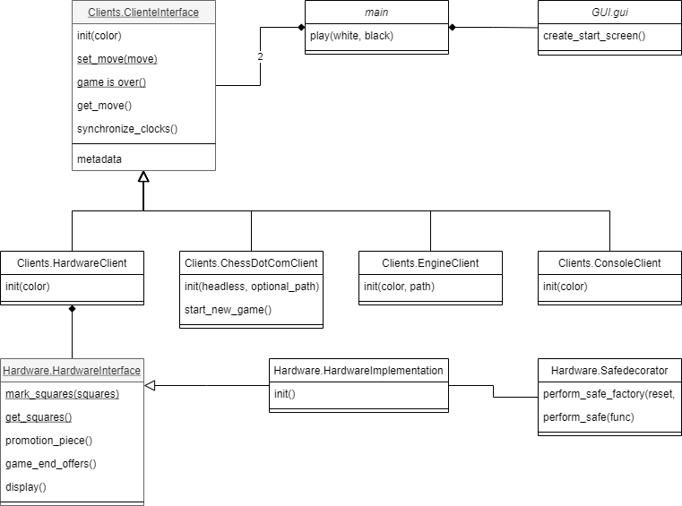

Software structure¶
In this section we will outline the structure and underlying ideas behind the software. Understanding this section is vital to implement new features. The software is divided into 3 modules:
GUI
Software
Hardware
Each module will be explained in detail on this page. The class diagram below shows how all modules and files relate to each other:
This page will go into all modules in detail.
Main module¶
As the name implies the main module starts the program. The documentation of the of the main module can be found
here. The main module contains only one method which is the main.play method. This method accepts
two clients as input and starts a game between the two clients. One of the clients will be the
Hardware.HardwareClient if the machine running the code supports the Hardware.HardwareClient. If the
hardware is not supported then then the Hardware.ConsoleClient will be started. This is mainly useful for
testing purposes. The second client given to the play method will be selected by the user using the GUI.
GUI module¶
The GUI module is another simple module and the documentation can be found here. This module contains a
very basic graphical user interface which allows the user to select the opponent he wishes to play against. The entrance
point is the method GUI.gui.get_opponent_from_gui. This method starts the GUI and returns the opposing client.
Every screen can only be used once which is why we have to recreate every screen if the back button is pressed.
Clients module¶
The Client module is the most important module in the project. New features will most likely need to be implemented in
this module. The class Clients.ClientInterface is a vital class which defines the interface of all clients.
All other classes implement this interface. There are currently 4 clients:
Client interface¶
The documentation of this class can be found here here. New programmers might not have
seen interfaces before and might be puzzled by their use. If you are familiar with interfaces then the
documentation will be sufficient to understand the interface. This section is aimed
for newer programmers which have not used interfaces yet.
In python we create an interface using something called abstract classes. These abstract class are not commonly used within Python but they are very popular in other programming languages. Abstract classes are classes which cannot be instantiated directly. Usually these abstract class will also contain abstract methods. If we want to instantiate an abstract class then we first need to implement it. We implement a class by extending the abstract class with a class which overwrites (ie. implements) all abstract methods. In Python code this looks like this:
from abc import ABC, abstractmethod
class abstract_class(ABC):
@abstractmethod
def print_name(self):
pass
class implementation_1(abstract_class):
def print_name(self):
print("implementation 1")
class implementation_2(abstract_class):
def __init__(self, name):
self._name = name
def print_name(self):
print(self._name)
Here the class abstract_class is the interface which has one method print_name. We can implement this class by extending it and implementing the print_name method. In the example this class has been implemented twice. The first implementation implementation_1 simply prints the class name when the print_name method is called. The second implementation implementation_2 needs to be instantiated with a name parameter. When the print_name method is called then this name is printed.
Now that we understand how to use abstract methods we might ask why we use these abstract classes. We can create new methods which use the abstract_class interface. These methods can call the print_name method without knowing how the method is implemented. An example of such a method can be found below:
from typing import list
def print_names(objects: list[abstract_class]):
for object in objects:
object.print_name()
This method accepts a list of objects as input. These objects are either instances of implementation_1 or implementation_2. Because of the abstract_class interface we are sure that both classes implement the print_name method. We can call this method without knowing how the method is implemented.
The Clients.ClientInterface interface is used similarly. Because of the interface we can easily
implement different ways to play against the board using one piece of code. Next to this the interface allows us to
create new clients without changing the existing code. The Clients.ClientInterface has two abstract methods
which need to be implemented. These methods are get_move and
set_move. The use of these classes speaks for itself. Next
to this the interface also contains normal methods. These methods are optional and do not need to be implemented.
If you do not implement these methods then the clients will use the base implementation from the abstract class. Next to
this the abstract class also contains public and private variables:
1. _board: This internal variable is of type chess.Board from the chess library. This variable contains the current state of the chess board.
2. _resigned: This variable is set to True if the client has resigned. This method is used in the base implementation
of the method game_is_over.
3. color: This public variable indicates the color of the client.
4. metadata: This public variable is a dictionary where the keys and values are both strings. This variable can be used to share some extra information like the players name. Make sure that no clients make assumptions about the content of this variable to ensure that all clients are compatible.
Lastly, note that if an __init__ method is implemented then the implementation should also call the original __init__ implementation. This can be done using the python code:
super().__init__(color)
Chess.com client¶
The documentation of this class can be found here. This client retrieves the
opponents moves from a chess.com game and can play moves back. This class is made using the test software
selenium. In order to use this software the chrome driver needs
to be installed on the controller. Selenium interacts with the chess.com site by locating elements by id. The software
can then, read, click or drag these elements. Please note that changing the theme of
the chess.com site can change the name of elements on the site and break the software. The chess.com client assumes that
the default theme on chess.com is used and draw / resignation confirmation is turned off. This client is the most hardware
intensive and sensitive to software changes. Starting up the chrome driver has a large overhead and logging in takes a lot
of time. This is why the chess.com client is the only client which can be reused. The
start_new_game method resets the client and allows us
to reuse the client for a new game.
Console client¶
The documentation of this class can be found here. The console client is a very
simple implementation of the client interface and is very useful for testing. This client parses moves from the console
and prints the current board state after a move is received. The input format is <from_square><to_square> ie,
e2e4 plays (pawn) from e2 to e4. Next to this the client also supports resignation (resign), draw offers
(draw <from_square><to_square>) and promotions (e7e8n, promotes the e pawn to a knight). Note that draw offers are
only returned while playing a move. You cannot offer a draw during your or your opponents turn.
Engine client¶
The documentation of this class can be found here. This client accepts a path to the
a chess engine as input. The Smart chess board project relies on the
chess library. This library contains built in engine support.
Because of this the implementation of this client is trivial. The strength of the engine can be configured
by setting the time the engine has to think about a move. We do not allow the engine to think during the opponents turn.
Hardware client¶
The documentation of this class can be found here. This client connects the project
to the hardware. The hardware is controlled using the Hardware.HardwareInterface interface. Internally the
hardware client creates a new thread to control the hardware. Because of the complexity of this class experience using
threading is required to modify it. In this section I will assume you are familiar with threading and mutex locks. Note
that unit tests are available in the tests directory.
In this client we distinguish between two threads. The main thread and the hardware thread. The main thread is the
thread runs the main method. This thread calls the methods from the Clients.ClientInterface. The main thread
communicates with the hardware thread using the private variables of the hardware client. In order to ensure thread
safety mutex locks are used. In order to prevent deadlocks any tread can only control at most one lock at every time. The
second thread is the hardware thread. This thread is responsible for controlling the hardware. In order to ensure
thread safety the main thread will never call the hardware interface or interact with the hardware in any another way.
The hardware thread can be in 3 states:
1. Detect player move: The state of the chess board is stored in the _board variable. From this state we can predict which squares should be occupied and which squares should be empty. We mark every square on the hardware which is not in the expected state. If exactly two squares are not in the expected state then we try to see if this represents a valid move. In this is the case then we place the new move in the _input_playResult variable and we move to state 2. In order to ensure thread safety the deep copy method is used to prevent pointers to shared memory leaving the hardware client.
2. Wait opponent move: In this state we wait until the set_move method is called. Next to this we highlight differences between the expected occupancy of the board and the actual occupancy of the hardware. Note that this might include part of the last move. As an example, let the hardware client be white and play a move which captures a black piece. This move is played by first removing the white piece and then removing the black piece. This results in two squares with a different occupancy so the move is detected. However the white piece still needs to be placed down. That is highlighted in this state. The expected occupancy is calculated by the chess library. Once the set_move method is called by the main thread we move from state 2 to state 3.
3. Play opponent move: In this state we wait until the user plays the opponents move on the hardware. The set_move method uses deep copy to places the opponent move in the _output_playResult variable. Using the chess library we find the new expected occupancy. Once again we highlight the difference between the expected occupancy and the actual occupancy. Once the user has played the move and the occupancies are the same we move back to state 1.
The hardware thread keeps looping between these states until the __del__ method is called. The __del__ method terminates the hardware thread. Once the hardware thread has terminated then the hardware client can be destroyed.
Hardware module¶
The last module is the hardware module. The documentation of the Hardware module can be found here Hardware package. The Hardware module has already been covered in great detail on this page. To summarise the module contains 3 files:
1. HardwareInterface: This method defines the interface of the Hardware. This allows
us to use the Clients.HardwareClient with any hardware setup.
2. HardwareImplementation: This class is implements the hardware interface
and is specific to hardware setup.
3. HardwareImplementation: This module contains useful resources to simplify
the hardware implementation.